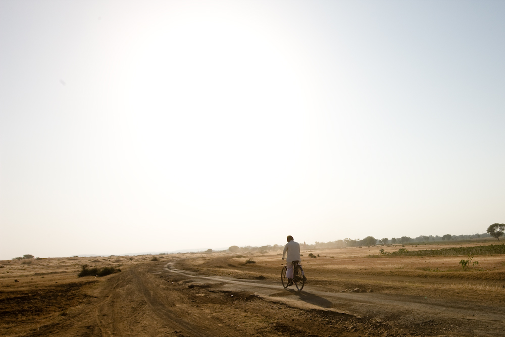

プレオーガニックコットンプログラムの始まりは2007年に遡ります。 kurkkuはap bank fesやMr.Childrenなどのコンサートグッズの環境対応を行うプロジェクトを行っており、そのTシャツやタオルを作るためにオーガニックコットンを使用していました。 2007年、クルックは国内で流通するオーガニックコットンの約30%を消費し、オーガニックコットンの国内最大の消費企業となりました。ですがクルックは、オーガニックコットンが本当に良いのか、一つの流行に過ぎないのかわかりませんでした。 オーガニックコットンは殺虫剤などの農薬を使わないため、生産者の生活を改善し、生産地の環境をよくすることが選ばれる理由ですが、生産地から遠くはなれている私たちにはその良さがいまいち実感がもてません。 そこで、オーガニックコットンの調達パートナーだった伊藤忠商事と相談し、コットンの生産地を訪れ、オーガニックコットンがどのように生産者を改善していくのかを学び、その実感を伝えていこうと思いました。 コットン農家が他の国に比べて小規模の農家が多いインドを選び、伊藤忠商事繊維カンパニーと共に向かいました。クルックは先進国の消費者として、サプライチェーンの原点である生産現場を理解し現地の課題に取り組むことは、世界をより良い場所に変えるチャンスであると信じていました。
▼生産者の実態
現地では実際に農薬を撒くところを見せてもらいました。 インドでは、裸足に素手で、農薬を散布するのが当たり前なため、皮膚が湿疹などをおこしたり、口から農薬を吸ってしまい、のどや内蔵をいためることがあります。 また、一番驚いたのは、畑のすぐ隣に井戸があったこと。 子供は井戸から水をゴクゴクと飲むことは日常となっており、土にしみこんだ農薬が雨で井戸に流れ込むのは、誰でも想像ができることです。
農薬の容器には赤いどくろマークに「POISON（毒）」の文字が見えます。 この農薬を買うために、普段はほとんどお金を使わない農民が借金をするケースが多くあります。そして、天候などの理由で不作になると、借金が返せず大きな負担となることが多く、この問題は社会問題にもなっています。
こうした農薬によるデメリットを目の当たりにして、オーガニックの良さを再確認できた一方、ヒアリングをした農家からは、「それでも収穫量（＝売上）を減らしたくない。だからオーガニック農法はやらない。」という声が非常に多く聞かれました。そこで、このオーガニックへの移行にかかる農家の負担を減らして、オーガニックに誘っていくプログラムとして、2008年、「プレオーガニックコットンプログラム」がスタートしました。
インドを訪れたクルックと伊藤忠は、コットンの農家が素手で農薬を扱う様子を見ました。農薬は大地に大量に流れ込み、その水を農民は飲料水として使用します。中には、深刻な健康被害や皮膚病を発症している農家の方々もいました。さらに、栽培に必要な農薬や種子を買うための資金的な負担は多く、借金をする小規模農家がいることもわかりました。
「なぜオーガニック栽培を始めないのですか？」と農家の方々に質問した時、農家の最大の課題として、オーガニック栽培を開始してから認証を受けるまでの2年～3年の期間は、コットンの生産量が減る危険性があることを知りました。この時、私たちは農家の方々がこのような健康や経済面での負担なくコットンを栽培できる仕組みを構築する必要性があることを強く感じました。
生産者の実態を見た私たちは、農家にとって最大の障壁となるオーガニック認証を得るまでの移行期間、農家を支援する仕組みを考えました。それが、プレオーガニックコットンプログラムです。 クルックは志が同じ伊藤忠商事テキスタイルカンパニーと共にこの事業を育てることを決めました。プログラムの開始以降、何千人もの農家がオーガニック栽培への移行を体験しています。
村の人が集まったプレオーガニックコットンプログラムの説明会です。オーガニック農法を始めるには、お金や農法の面で負担がかかるため、個人レベルの努力だけでなく、それをサポートする仕組みが必要です。
1つ目のサポートは、農薬を使わないことで収穫量が減り収入が落ちる不安を解消するために、オーガニックコットンと同等の価格で購入することを保証します。
2つ目はオーガニック農法の技術指導を行います。この地域では農薬を使い続けて20〜30年経っているため、農薬を使わない農法をみんな忘れてしまっています。写真は、現地に生えているハーブなどを調合する、天然の防虫剤の作り方を教えている風景です。 ニームという草を使いますが、試しに噛んでみるととても苦くて虫もきちんと逃げていきそうです。
また、第三者機関での認証も大切です。プレオーガニックコットンは、コントロールユニオンという機関の認証を得ています。3年間無農薬であること、遺伝子組み換えの種を使っていないことが認証されて、始めてオーガニックコットンとなります。 定期的に農薬を使っていないか、現地検査官が土の状態をチェックしています。写真は、土の状態を確認している検査官です。土の色、そして堅さをみると、一目で農薬を使っているか分かるといいます。
そして、秋、収穫の季節になるとコットンは、牛車に積まれて集められてきます。 この写真はオーガニック農法にトライした、プレオーガニックコットン一年目のコットンが集積所に集まってきた風景です。大地の恵みを感じる収穫の季節は、みな喜びと笑顔にあふれています。
開始から10年以上経ってが、プレオーガニックコットンプログラムはインドの数多くの農家のオーガニック化を支援してきました。 しかし今でも、オーガニックコットンの生産量は全体のコットン生産量の約1%に過ぎません。 みなさまが、プレオーガニックコットンのTシャツ1枚を選ぶことで、8平方メートルのコットン畑がオーガニックに移行される支援に繋がります。私たちの身近にあるコットンから自分たちの力で、世界をよりサステナブルにしていきませんか？